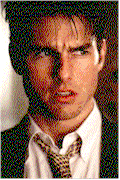

Contents | Features | Reviews | Books | Archives | Store |
 |
|
| Movie Credits | Buy It! |
Jerry Maguire
Review by Eddie Cockrell
|  | Written and directed by Cameron Crowe Starring
Tom Cruise, Cuba Gooding Jr., |
Ever get that sixth sense, watching the coming attractions at the local googolplex, that the film not only isn't worth your time but looks like brainless fluff as well? That pretty much describes the trailer for Cameron Crowe's third feature, the Tom Cruise vehicle Jerry Maguire. See Tom/Jerry stare down his sports agent colleagues! See Tom/Jerry run through airports with a determined look on his face! See Tom/Jerry find time to make backlit love to a woman (tasteful yet wildly passionate)! See Tom/Jerry bond with an adorable kid! And, of course, see the gazillion-watt grin that Tom uses to make Jerry's go-go ambition palatable to men and women alike, the same grin that has hung like a cheap suit of clothes on Cruise's soon-to-be-chastised characters since the morally bankrupt but gleefully frat-housish Risky Business minted that franchise 13 years ago.
To be sure, all of these scenes are in the finished film (why do some trailers have so much discarded material? Are they saving those bits for the Criterion laserdisc, or do all first cuts now routinely run three hours plus?), but in this case don't trust your instincts; Jerry Maguire the trailer is a callous cocktail that coasts by on lowest common denominator Cruise control, while Jerry Maguire the film is among the very best contemporary movies about the uneasy intersection between sports and business as well as the human toll of this peculiarly American phenomenon. It also finds time to offer pointed opinions on classic jazz, the talismanic qualities of goldfish, Pete Rose's exclusion from the Baseball Hall of Fame, support groups, Hootie & the Blowfish, child care options, the Dallas Cowboys, mentors, race relations, celebrity endorsements, the showing of emotion on television talk shows, ABC Monday Night Football, finding just the right song to howl along with on the highway and the importance of medical coverage to the employee.
Jerry Maguire is a fast-talking, hard-working young sports agent who works side-by-side with a group of young turks at SMI (Sports Management International) in Los Angeles. During a tumultuous exposition-laded, terrifically edited opening credit sequence--note to "serious" filmmakers: see, they're good for something, as opposed to just starting the film with no sense of focus or pace -- Jerry has a dark night of the soul and distributes a "mission statement" ("not a memo") pleading to shift the focus of the business from the bottom line to hands-on managing of fewer clients per agent.
The memo brings public cheers from his colleagues, most of whom remain privately cynical. Is there room for the truth? Apparently not; Cruise is fired by boss Bob Sugar (Jay Mohr), whose unrepentent callousness will make him the vague focus of Jerry's professional redemption. Stalking out of the office with only a goldfish and meek accountant Dorothy Boyd (Renee Zellweger), Cruise pours his not immodest energy into two clients, clean-cut college quarterback (and first-round sure thing) Frank Cushman (Jerry O'Connell) and Rod Tidwell (Cuba Gooding Jr.), the tightly-wrapped Arizona Cardinals wide receiver whose off-the-field histrionics and extended family hijinks provide much of the film's physical comedy.
When his shepherding of Cushman hits an unexpected snag, it costs Jerry his relationship with hard-as-nails NFL publicist Avery Bishop (Kelly Preston) and opens the door to the awkward but inevitable courtship of Dorothy, whose young son Ray (Jonathan Lipnicki) has taken an immediate liking to the agent--who is surprised and touched by his own seemingly endless tolerance for the tyke.
The climaxes of the film, such as they are, involve redemption: Rod learns the importance of singing for his supper in a hysterical send-up of end zone celebrations that was reportedly choreographed by Paula Abdul (If "Hollywood Squares" was still on, where d'you think she'd be? Lower right, maybe?); Dorothy's skeptical, wise-cracking sister Laurel (Bonnie Hunt) makes her peace with their relationship ("If you fuck this up, I'll kill you," she tells Jerry); But most significantly, Jerry Maguire has the courage of its convictions not to be about Jerry's revenge against SMI, opting instead for a graceful story arc of discovery and growth followed by an unabashedly sweet fade-out that makes extraordinarily effective use of Bob Dylan's 23-year-old classic "Shelter from the Storm" (in fact, the film features benefits immensely from the shrewdest use of popular music in a Hollywood feature since Martin Scorsese's GoodFellas).
Remarkably, at 18 minutes over two hours Jerry Maguire never plays long, due entirely to the informed immediacy and precise balance of the script. It took writer-director Cameron Crowe , a former journalist with "Rolling Stone," three years to write, and the care shows in the depth of the characterizations and the logic of the plot. Originally conceived as a vehicle for Tom Hanks, the movie cries out for an actor going through what one character fleetingly refers to as a pre-mid-life crisis. Shrewdly, Crowe has trusted his instincts to go with relative unkowns in the large supporting cast, and the gamble has paid off handsomely-- the acting is uniformly first rate, without a sour note in the entire ensemble. Zellweger is a revelation of precise comic acting, sort of (as one critic has already alluded to) a Victoria Jackson without the insecurity and whininess. Little Lipnicki has gotten raves for his turn as the bespectacled Ray, and his finely-timed scenes with Cruise--sentimental without once becoming cloying--are indeed the heart of the picture.
After the impenetrably plotted but ultimately blockbuster Mission:Implaus--ah, Mission: Impossible, Cruise, an actor known for balancing "important" movies with more mainstream stories, has cleverly switched the order by starring in (and co-producing) his summer smash and following up with a movie that looked like another populist parable like Days of Thunder but plays with as much sincerity and substance as Rain Man. Perhaps sensing that his brash-young-guy-on-the-come routine was getting a bit fleabitten, Cruise must've rejoiced at the complexities of Maguire, a guy who wants to change but hasn't a clue how to go about it with guaranteed success. And it is that very confusion and vulnerability that separates Jerry from Cruise's other glib creations. A very smart actor, he saw the need for modification and jumped at it with calculated relish. Could Tom Hanks, or John Cusack, or Matt Dillon have played Maguire? Sure, but not with the volatile mix of supermarket tabloid fame and honest talent Cruise brings to the party. Would that have had an impact on the fragile chemistry of the film? Without a doubt. Jerry Maguire, the actor's 19th feature, showcases Tom Cruise's best performance to date
The rest of the ensemble is first-rate, with clever casting on down the line that includes the Eagles' Glenn Frey as the coach of the Cardinals (!!!), and brief and/or uncredited turns by Beau Bridges as Cushman's driven father, conflicted between protecting his young son from the big world and placing him as the number one draft choice; Eric Stoltz as a fellow SMI agent, flush with the satisfaction of being young, rich and obnoxious; and "Rolling Stone" editor Jann Wenner as the head of the agency, a quiet but effective Don Simpson lookalike who provides a rough sketch of a domineering boss. A long list of jocks and jockish celebrities pop up as well, including Troy Aikman (how prescient this movie looks after the Cowboys' messy, inevitable playoff demise!), Roy Firestone, and the Gifford/Michaels/Dierdorf trinity of ABC's noisy, Monday night pigskin party.
Crowe is now three-for-three as a hyphenate filmmaker. His Say Anything... (1989) is a sublime paeon to youthful eighties exuberance, while Singles (1992), with its stoned-again career-best performance by Dillon but uneven secondary cast, was unfortunately overlooked but will play far better with age and the adoration of pop archaeologists seeking the truth about the Seattle grunge movement (vital then, quaint now--gee, just like punk).
He's a filmmaker of power on the word processor as well as the set, writing snappy, screwballish dialogue that plays only in the context of his seemingly meandering, episodic plots. Look closely, though, and you'll see how carefully he unites actor and situation: scenes like the awkward elevator ride after Jerry and Dorothy have left SMI succeed through an intertwined foundation of timing, angles and performance. Yet an actor in a Cameron Crowe film must be prepared to do things that fly in the face of conventional narrative: his characters are forever addressing the camera and declaiming their innermost thoughts in voice-over, the cumulative effect of which is an anything-can-happen atmosphere and characters of substance etched in lightning-quick vignettes. That he coaxes such disciplined performances out of newcomers Zellweger and Lipnicki in particular is proof enought that his sets must nurture an atmosphere of confidence and control.
Smart without being smart-mouthed, shrewd without being calculated, and quite obviously the work of a filmmaker with something important to say and a clear and impish way of saying it, Jerry Maguire is a triumph of nuanced social satire masquerading as a commercial romantic comedy, a movie that can both make fun of and wallow in its celebration of the crass spectacle American sport has become.
Contents | Features | Reviews | News | Archives | Store
Copyright © 1999 by Nitrate Productions, Inc. All Rights Reserved.